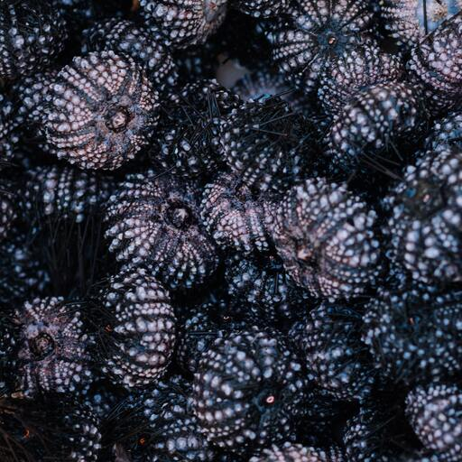

УРОКИ І МАЙСТЕР-КЛАСИ ДЛЯ ДІТЕЙ

Загальноосвітніх школах
Приватних та недільних школах
Літні табори
Церквах
Городских мероприятиях
Під час занять наші фахівці у простій та доступній формі розповідають дітям обрану тему, використовуючи ефектні музейні експонати.
Інтерактив – це наше все. Як кажуть, краще один раз потримати в руках, ніж сто разів побачити на картинці.
Що залишили по собі динозаври?
Дивовижні істоти, що населяли територію України
Я – палеонтолог
Монстри морських глибин
* Тема може бути змінена під Ваші потреби.
Ми обов'язково беремо в розрахунок вікову категорію дітей і адаптуємо матеріал для них (від 5 років і старше).
Унікальна опція під час наших заходів - це можливість зберігати в руках і фотографуватися з поточними окаменелостями тварин та іншими цікавими предметами. З досвіду перевіряємо - це захоплює як дітей, так і дорослих. Такої практики немає ні в одному краєведчому музеї України!